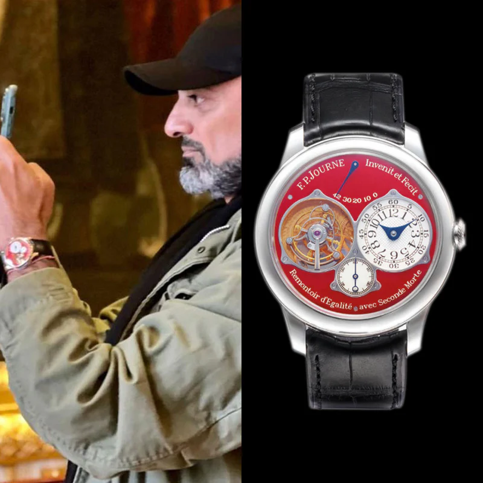

Home · The Collection · F.P. Journe

F.P. Journe · Tourbillon Souverain Bleu
F.P. Journe Tourbillon Souverain Bleu
RR · Very Rare
| Movement | Manual-winding Tourbillon, Caliber 1403 |
| Case | 18K Rose Gold |
| Dial | Blue Fumé |
| Case size | 38mm |
| Power reserve | 82 hours |
| Complications | Tourbillon, Power reserve indicator |
| Year | 2015 |
| Valuation | US$ 280,000 |
F.P. Journe's Tourbillon Souverain represents the pinnacle of his watchmaking philosophy. The brilliant blue fumé enamel dial, paired with a hand-wound tourbillon escapement, creates a watch that is both visually stunning and mechanically extraordinary.